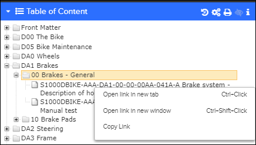
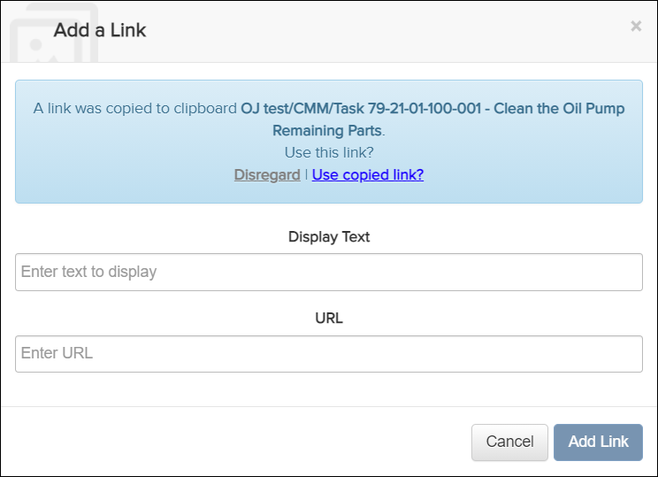
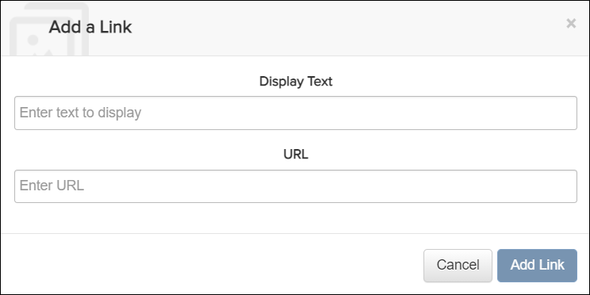

Not applicable for Pinpoint Standalone Light.
- Enter authoring mode. Refer to Enter Authoring Mode.
- Access the section where you want to add a link.
-
Select one of these options to add a link:
- To copy a link, do these steps:
- Right-click a document (e.g., task) or document anchor (e.g.,
subtask) in the Table of Content, and click
Copy Link. For example:

Table of Content - Copy Link
Note: Document anchors are visible only when the Can author content permission is granted.Note: You can copy the link before entering the authoring mode. - In the Authoring Toolbar, click the
 Add a Link icon to add a reference link. The
Add a Link dialog appears.
Add a Link icon to add a reference link. The
Add a Link dialog appears.
Add a Link Dialog
- Click Use copied link? to automatically fill
the Display Text and
URL fields.
Click Disregard if you do not want to use the copied link. Manually enter text in the Display Text and URL fields.
- Click the button.
- Right-click a document (e.g., task) or document anchor (e.g.,
subtask) in the Table of Content, and click
Copy Link. For example:
- To manually enter a link to an existing task or an external link, do
these steps:
- In the Authoring Toolbar, click the
Add a Link icon to add a reference link. The
Add a Link dialog appears.

Add a Link Dialog
- Enter values for the Display Text and URL fields.
- Click the button.
- In the Authoring Toolbar, click the
- To copy a link, do these steps: